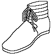

Roman Shoes
Calceus
Calceus/Calcei:
(Calx, The heel; Calamen) The shoe that covered the whole foot, as
distinguished from a sandal, or Soleae. These are generally considered to be the center
seamed or laced shoes with the separate inner and outer soles. Calcei were formal shoes
worn with the toga outside the house, while sandals were worn with the tunic inside the
house. Slaves were not allowed to wear calcei. Free men put on a kind of thick-soled,
closed shoe or boot reaching to the calf, with two holes at the side through which leather
thongs were passed and tied round the leg. Open on the inside at the ankle, and fastened
about the ankle and and calves with four wide straps (corrigiae), wound around the ankle
two or three times, to a distance about half-way below the calf, and tied in front with a
knot. These straps ran from the sole and were wrapped around the leg and tied above the
instep. A second pair of straps was attached on each side of the sole, at widest part of
the foot, and crossed over the instep, fastened round ankle on top of the first pair of
straps, and tied in a knot in front be the first one. Wearing the straps (fasces
crurales, tibiales; fasces feminales) any higher up the leg, for example
to the thigh, is considered effeminate.
- Calcei senatorii/calceus senatorius
(Calcei Mullei/Mulleus) Boots for Roman senators, which were distinguished by their
red color from the patrician boot. The mulleus was worn originally by patricians only, but
later boots of red leather were the distinguishing of senators and higher magistrates
(curule). A silvered leather or red leather version that was adorned with a crescent
shaped piece of ivory at the top (lunula) signify Important State officials from a noble
family.
- Calicae equestres
Shoes differentiated in the Edict of Diocletian from the Calcei senatorii.

- Calcei patricii
Boots for Roman nobles which had closed uppers and a long tongue (as described in the
Edict of Diocletian). They were hound to the leg with four thongs (corrigiae), two on each
side attached between the sole and the uppers, front and back. The thongs tied around the
upper ankle and the middle of the leg. Patricians wore the sole part in untanned leather
and the four straps in black.
- Calcei muliebres
Women wore boots like the men's, but made of thinner, softer, leather, in a bright variety
of colors, often in white, and decorated with precious stones and pearls. Sometimes, in
place of straps, narrow bands of coloured silk were used to tie on the boots.
- Calceolus/Calceolii
A small shoe, or half boots, usually for women.
- Calcei repandi
Pointed-toed shoes, curving upward at the toe, that were worn by Etruscans in the sixth
century B.C. These, in theory, were the model for the later Roman senatorial calcei with
lacing and straps. Cicero says that only statues of Juno Sospita continued to use the
pointed-toe calcei repandi, but a rounded-toe version may have been in use as late as the
third century A.D.
Return to Contents or to Types
of Roman Shoes
Footwear of the Middle Ages - Roman Shoes - Calceus, Copyright � 1996, 1999, 2001,
2002 I. Marc Carlson.
This page is given for the free exchange of information, provided the author's name is
included in all future revisions, and no money change hands, other than as expressed in
the Copyright Page.